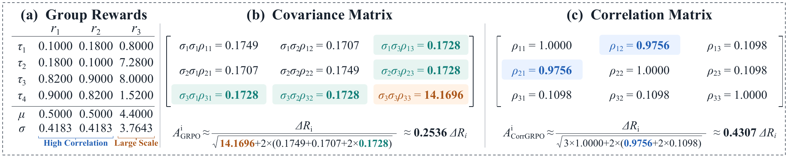
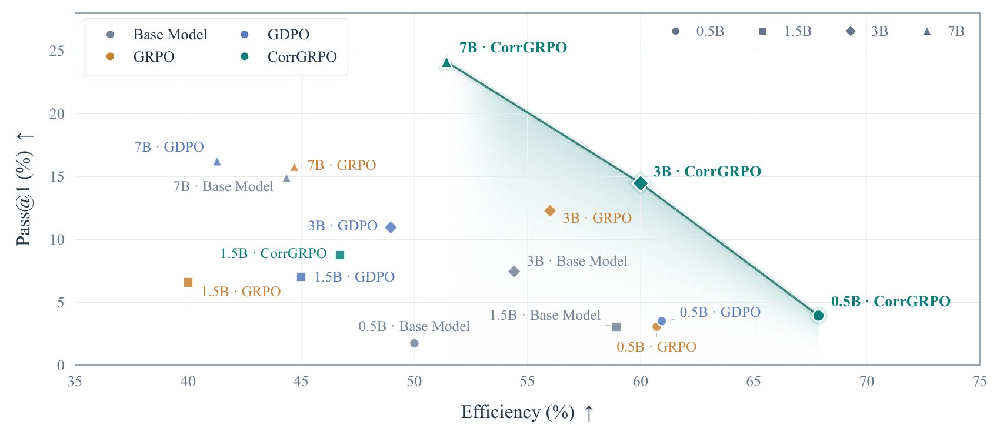
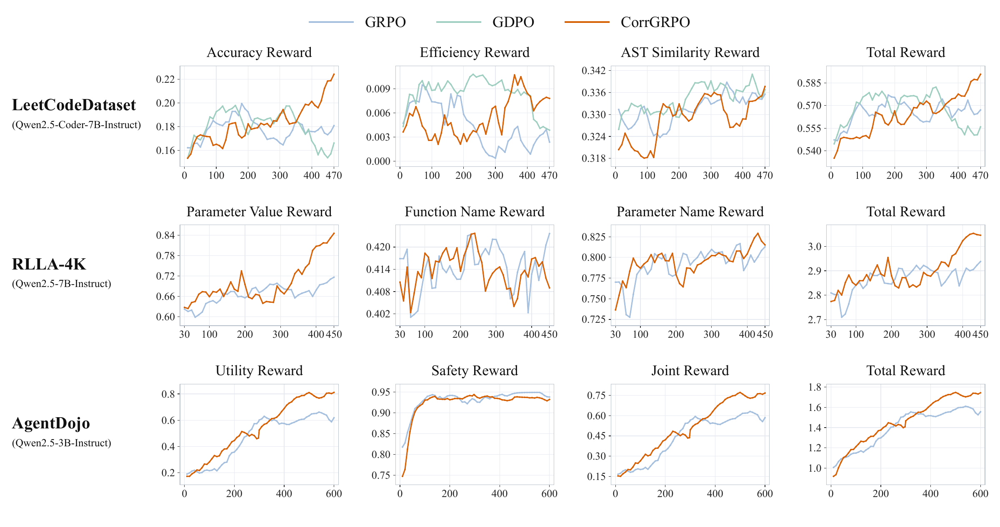

CorrGRPO: Correlation-Normalized GRPO
for Multi-Reward Learning
Hong Kong University of Science and Technology
* Equal contribution
Introduction
Group Relative Policy Optimization (GRPO) is widely used to train reasoning language models, where it computes advantages by centering and normalizing rewards across rollouts of the same prompt. For multiple rewards, GRPO sums the reward components and normalizes the total reward by its within-group standard deviation. The corresponding variance equals the sum of all pairwise reward covariances. For a fixed centered reward, larger aggregate covariance produces smaller advantages, and vice versa, allowing update magnitudes to adapt to reward dependence. However, correlated rewards with large scales can dominate this normalization and suppress signals from smaller-scale rewards.
We propose Correlation-Normalized GRPO (CorrGRPO), which normalizes pairwise covariances into Pearson correlation coefficients. CorrGRPO keeps the centered total reward unchanged while balancing the influence of differently scaled rewards on the correlation-based normalization. This allows advantage magnitudes to adapt to reward correlations without the normalization being dominated by large-scale reward components. We compare CorrGRPO with GRPO and other variants on code generation, tool calling, and agent security, using models ranging from 0.5B to 8B parameters. These tasks all involve multiple rewards that can improve together or present tradeoffs. Results show improvements across three domains, including code generation, tool calling, and agent security.
Method
GRPO normalizes by the standard deviation of the total reward, whose variance is the sum of pairwise covariances. CorrGRPO retains the same centered total reward and normalizes each covariance into a Pearson correlation.
GRPO
CorrGRPO
Here, is the total reward of rollout , is the group mean of reward component , and is the number of reward components. All statistics are computed within the same prompt group; is a numerical stability constant.
Sample covariance and variance measure reward dependence and scale within the group; Pearson correlation divides each covariance by the product of the two component standard deviations. The highlighted term removes reward-scale weighting from each pairwise covariance. Zero-variance reward components contribute zero rows and columns to the correlation matrix.

Interactive normalization example
Rescale the third reward while keeping the first two rewards fixed. Compare how covariance and correlation affect the normalization denominator.
GRPO · Covariance
Advantage multiplier
CorrGRPO · Correlation
Advantage multiplier
Each multiplier is the reciprocal of the square root of the sum of all matrix entries, with ε omitted. Positive rescaling leaves correlations unchanged, but also changes the centered total reward; the full advantage is not scale invariant.
Results
We evaluate CorrGRPO on code generation, tool calling, and agent security. Select a domain and backbone to compare performance across methods.

Validation reward curves

BibTeX
@misc{hu_corrgrpo,
title = {CorrGRPO: Correlation-Normalized GRPO for Multi-Reward Learning},
author = {Hu, Wenbin and Jing, Huihao and Shi, Haochen and
Liu, Yuxuan and Li, Haoran and Song, Yangqiu},
year = {2026},
eprint = {2609.36820},
archivePrefix = {arXiv},
primaryClass = {cs.LG},
url = {https://arxiv.org/abs/2609.36820}
}